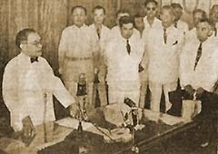

|
j
a v a s c r i p t |
October 7, 1943
I can guarantee no publication here will report figures from the March issue of the Oriental Economist: Borrowings from Occupied Territories: 3.3 billion yen. Leasing of Captured Properties: 1.6 billion-yen. Casualties of the Buna and Guadalcanal campaigns: 16,734 Japanese and 25,000 enemy — killed. Including the wounded and diseased, the Japanese must have had 50,000 men placed out of action. Aircraft losses: Enemy: 205 shot down and 32 damaged; Japanese: 215 "self-blasted or didn't return" and 114 "greatly damaged." That's 339 of theirs to 237 of ours. Tribune: "500 Manila Guerrillas Surrender ... Tomorrow is last day for registration of Misguided Groups." Ex-Governor Marcelo Adduru of Cagayan is anxious to let us know that he resisted the Japanese until he was captured. He's been through a six-month rejuvenation course already.

Laurel Broadcasts
La Vanguardia: "Independence on the 14th." A picture shows Laurel talking on the radio, watched by a group of Filipinos as if they were at a criminal trial. I told Pacifico Ledesma's clerk: "You ought to be very happy now, you'll get your independence next Thursday." He blushed, grinned ear-to-ear, then said, "I don't want that independence." When I asked the same question to our waiter, Mike, he said, "I don't know, sir, I'm a little mixed up. Our Kalibapi leader assured us we're doing the right thing in accepting Japan's offer." "Well, you'll probably make a good infantry man," I joked. "Well, if it's my duty," he said, straightening up. "Yes, but who are you going to fight?" "That's what puzzles me. I don't know why I should, and I don't know for whom I should." "When the time comes, you'll have to make up your mind. I think you'll do the right thing," I said, getting up to leave. He looked at me queerly, then grinned. "Yes Sir!" |
|
|
|
|